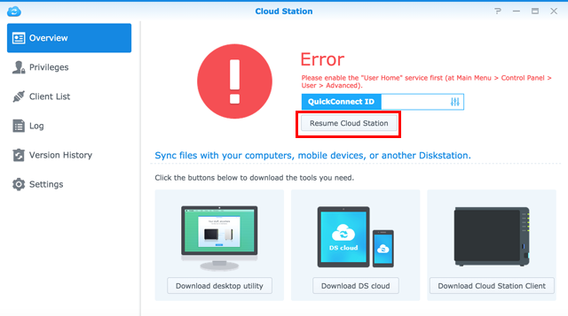

Panoramica
Cloud Station per eCore Server è un'applicazione per la sincronizzazione di file che permette di sincronizzare i file facilmente sulla propria eCore Server con altri dispositivi, come computer o dispositivi mobile (come DS cloud). Una volta che la Cloud Station è stata installata sulla eCore Server e il computer, i file archiviati in una cartella specifica del proprio computer saranno automaticamente sincronizzati alla propria eCore Server.
1. Installare Cloud Station
- Andare su Centro pacchetti, individuare Cloud Station e fare clic su Installa.

2. Abilita Cloud Station
- Avviare Cloud Station.
- Se la funzione home utente non è stata abilità, verrà richiesto di abilitarla. Fare clic su OK.
- L'utente sarà reindirizzato alla pagina delle impostazioni dell'utente. Abilitare homes utente e fare clic su Applica.
- A questo punto, tornare a Cloud Station e verrà richiesto di abilitarla. Fare clic su Sì. 
- Andare su Privilegi e specificare gli utenti che potranno usare Cloud Station. Fare clic su Salva.


3. Installare e abilitare il client
- Andare su Cloud Station > Panoramica e fare clic sul pulsante Computer.
- Fare clic sul pulsante per scaricare Cloud Station per il proprio sistema operativo. (è anche possibile scaricare Cloud Station dal Centro download Synology).
- Lanciare il programma di installazione nel computer e seguire le istruzioni sulla schermata.
- Dopo l'installazione, eseguire Cloud Station sul computer. Fare clic su Avvia ora.
- Inserire l'indirizzo per il eCore Server che esegue Cloud Station (o ID QuickConnect), nome utente e password. È possibile fare clic sull'icona di ricerca a destra per cercare gli IP nella LAN. Fare clic su Avanti.
- Selezionare la modalità di configurazione dell'attività (nell'esempio, si selezionerà Configurazione rapida), quindi fare clic su Avanti.
- Per completare la configurazione della cartella Cloud Station, fare clic su Fine.
- Fare clic su Aprire adesso per aprire la cartella Cloud Station.
- L'icona Cloud Station si trova nell'area di notifica.
- Fare doppio clic sull'icona di Cloud Station per aprire l'area di notifica. Qui, è possibile visualizzare l'avanzamento e lo stato dei file. Fare clic su App principale per avviare Cloud Station.
- All'avvio, verranno mostrati alcuni suggerimenti su come usare Cloud Station. Fare clic sulla freccia a destra per vedere altri suggerimenti oppure fare clic su Vai ai tutorial online per maggiori informazioni. Per non visualizzare i suggerimenti, fare clic su Non mostrare più.
- A questo punto, sarà possibile gestire le attività di sincronizzazione in Cloud Station.


4. Sincronizzare dati sui dispositivi mobile
DS cloud è disponibile gratuitamente su Apple App Store e su Google Play Store. È anche possibile scannerizzare il seguente codice QR per effettuare il download immediato.